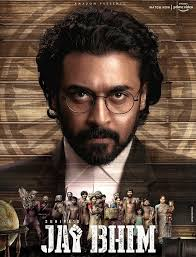
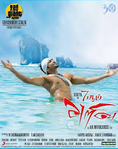
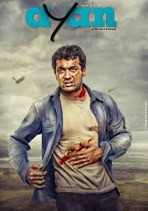
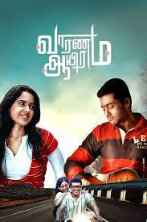

SPOTSTAR - SURYA
Suriya, whose full name is Saravanan Sivakumar, is a prominent Indian actor known for his work in Tamil cinema. Born on July 23, 1975, he is the son of veteran actor Sivakumar. Suriya made his film debut in 1997 with Nerrukku Ner and gradually rose to fame through his hard work, versatility, and dedication. He is widely admired for his performances in films like Kaakha Kaakha, Pithamagan, Ghajini, Vaaranam Aayiram, 24, and Soorarai Pottru. His ability to portray a wide range of roles—from romantic leads to intense action heroes—has earned him both critical acclaim and a massive fan following. Apart from acting, Suriya is also a successful producer through his company 2D Entertainment and has backed several quality films. He is known for his strong social commitment and runs the Agaram Foundation, which supports education for underprivileged children. Suriya has received numerous awards, including several Filmfare Awards and a National Film Award for Best Actor for Soorarai Pottru. Known for his humility, discipline, and philanthropic nature, Suriya is considered one of the most respected and influential figures in the South Indian film industry.
POPULAR FILMS




